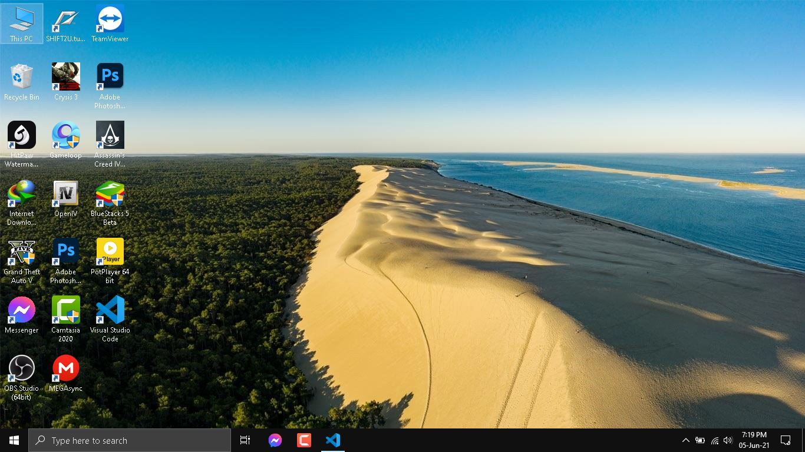
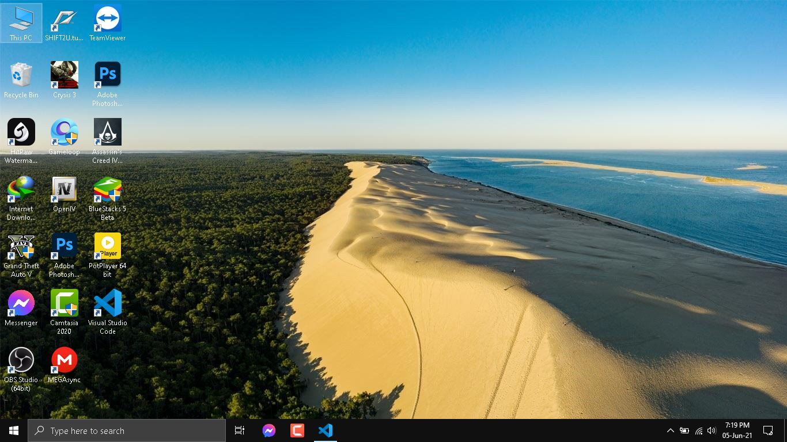

Welcome to my profile
Efty!
My images
 

Flood in Bangladesh
Floods occur when water bodies receive excessive water due to continued torrential rains. Normally drylands may also get flooded when water overflows the banks of water bodies, or when there is heavy and continuous rainfall. Floods also occur in modern cities and towns where there is a high density of human population, and increased urban development by way of housing and other construction. Various activities of men have caused ecological destruction that has also been responsible for the occurrence of floods. For example, when trees are cut and forests are cleared there is increased soil erosion. This is because soil binds the soil, and the cutting of trees results in the topsoil getting washed away in rains. Soil erosion leads to silting of rivers and lakes. When there are heavy rains these water bodies get flooded.
Floods are also an outcome of poor drainage systems in modern urban areas where there is a high density of human population. The cities’ drains get clogged by the huge amounts of domestic garbage that also includes plastic waste. As plastic is non-biodegradable it remains without getting decomposed. When there are torrential and continuous rains for some days the drains get totally choked leading to floods in the cities. Floods cause loss to life and property. Villages, towns, and cities in coastal regions and near the banks of rivers are more vulnerable to floods. When a place is under a flood there is a need to manage the disaster by evacuating the people and providing them relief. After a flood too, there is a need for rehabilitating the people and for the reconstruction of the damaged property.
My videos
My audios
Download Gta5 from here
Download